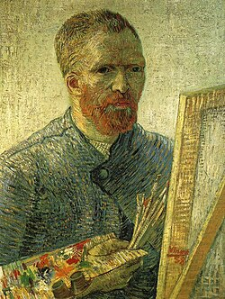

ვინსენტ ვან გოგი ბიოგრაფია

1869–1876 წლებში სამხატვრო-სავაჭრო ფირმის კომისიონერად მუშაობდა ჰააგაში, ბრიუსელში, ლონდონსა და პარიზში,
1876 წელს მასწავლებლობდა ინგლისში. შეისწავლა თეოლოგია და 1878–1879 წლებში მოძღვრად იყო ბორინაჟში (ბელგია),
სადაც გაეცნო მაღაროელთა მძიმე ცხოვრებას. მშრომელთა ინტერესების დაცვის ნიადაგზე კონფლიქტი მოუვიდა ეკლესიის
მესვეურებთან. 27 წლისამ გადაწყვიტა ხატვა შეესწავლა. ესწრებოდა ლექციებს ბრიუსელისა (1880 – 1881) და ანტვერპენის
(1885– 1886) სამხატვრო აკადემიებში. 1881–1885 წლებში ვან გოგი გატაცებით ხატავდა ბორინაჟის მაღაროელებს, გლეხებს,
ხელოსნებს, მეთევზეებს. 30 წლისამ მუშაობა დაიწყო ფერწერაში, უბრალო ადამიანებისადმი ღრმა თანაგრძნობით განმსჭვალულ,
მუქ, პირქუშ ტონებში შესრულებულ სურათებსა და ეტიუდების სერიაში („გლეხის ქალი“, 1885, კრელერ-მიულერის სახელმწიფო
მუზეუმი, ოტერლო; „კარტოფილის მჭამელები“, ვ. ვან გოგის ფონდი, ამსტერდამი).
ვან გოგი ავითარებდა XIX საუკუნის კრიტიკული რეალიზმისა და განსაკუთრებით ჟან ფრანსუა მილეს შემოქმედებით ტრადი
ციებს.
1886–1888 წლებში ვან გოგი ცხოვრობდა პარიზში, სადაც თავისი ძმის თეო ვან გოგის დახმარებით გაეცნო
ქალაქის სამხატვრო ცხოვრებას (თეო ვან გოგი, პარიზის ერთ-ერთი გალერეის დირექტორი, მთელი ცხოვრების
მანძილზე მორალურად და მატერიალურად ეხმარებოდა ძმას). პარიზში ვან გოგი კერძო სტუდიაში სრულყოფდა
ხატვის ტექნიკას. ითვისებდა იმპრესიონისტების (კლოდ მონე, კამილ პისარო, ალფრედ სისლეი) პლენერულ ფერწერას და სწავლობდა
იაპონურ გრავიურას. დაუახლოვდა ანრი დე ტულუზ-ლოტრეკსა და პოლ გოგენს. ამ დროიდან ვან გოგის პალიტრაზე მუქი ფერები კაშკაშა და
მოციმციმე ცისფერმა, ოქროსფერმა და წითელმა ტონებმა შეცვალა. ფუნჯის მონასმი უფრო თამამი და დინამიკური გახდა ("ხიდი სენაზე“,
1887, ვ. ვან გოგის ფონდი, ამსტერდამი და სხვ.).
1888 წელს ვან გოგი სამუშაოდ გაემგზავრა საფრანგეთის სამხრეთ პროვინციაში, არლში, სადაც ინტენსიურად და ნაყოფიერად მუშაობდა,
ხატავდა ნატურიდან. არლის პერიოდის დასაწყისშივე ჩამოყალიბდა მისი მხატვრული ენა — საკუთარი ემოციური განწყობილებით გადმოეცა
ნატურა, მოვლენა, თუ საგანი. მხატვარი მიმართავდა ფერების კონტრასტულ შეხამებას და პასტოზურ მონასმებს. სამხრეთის მზით განათებულ
მოციმციმე პეიზაჟებში („მკა. ლაკროს ველი“, „მეთევზეთა ნავები სენტ-მარიში“, ორივე 1888, ვ. ვან გოგის ფონდი, ამსტერდამი)
ჩანს ჰარმონიის, მშვენიერებისა და ბედნიერებისაკენ სწრაფვა; იმავე დროს ვან გოგი ქმნის სიმარტოვითა და უმწეობით დატანჯულ ადამიანთა
ტრაგიკულ სახეებს („ღამის კაფე“, 1888, კერძო კოლექცია, ნიუ-იორკი). ფერის დინამიკა და გრძელი მონასმები ვან გოგის ტილოებზე დიდ
ცხოველმყოფელობას ანიჭებს არა მარტო ადამიანს და მის გარემომცველ ბუნებას („წითელი ვენახები არლში“, 1888, ა. პუშკინის სახელობის
სახვითი ხელოვნების მუზეუმი, მოსკოვი), არამედ უსულო საგნებსაც („ვან გოგის საწოლი ოთახი არლში“, 1888, ვ. ვან გოგის ფონდი,
ამსტერდამი).
80-იანი წლების ბოლოს მხატვარი ფსიქიკურად დაავადდა, რასაც მოჰყვა კონფლიქტი მასთან სტუმრად ჩამოსულ გოგენთან. ვან გოგი
იწვა ჯერ არლის, შემდეგ კი სენ-რემისა (1889–1890) და ოვერ-სიურ-უაზის (1890, სადაც თავი მოიკლა) საავადმყოფოში. ვან გოგის
ბოლო 2 წლის ნამუშევრებისათვის დამახასიათებელია ფერთა შეხამების, რიტმის და ფაქტურის უკიდურესად გამძაფრებული ექსპრესია,
განწყობილებათა მკვეთრი ცვალებადობა. სასოწარკვეთილებას („მარადისობის კარიბჭესთან“, 1890, კრელერ-მიულერის სახელმწიფო
მუზეუმი, ოტერლო) და აღგზნებულ ვიზიონერულ იმპულსებს („კიპარისებიანი და ვარსკვლავებიანი გზა“, 1890, იქვე) ენაცვლება
ნატურის მშვიდი და მთრთოლვარე შეგრძნება („ოვერი წვიმის შემდეგ“, 1890). სიცოცხლისა და ადამიანების სიყვარულით გამსჭვალულ
ვან გოგის შემოქმედებაში ნათლად აისახა ევროპული კულტურის ისტორიის რთული და გარდამავალი პერიოდი. სულიერ ფასეულობათა
მტკივნეულმა ძიებამ, რაც განსაცვიფრებელი სიწრფელით გამოვლინდა მხატვრის ცხოვრებასა და შემოქმედებაში (მ. შ. წერილებშიც), ტრაგიკულმა
პათოსმა განსაზღვრა ვან გოგის ადგილი პოსტიმპრესიონიზმის ხელოვნებაში,
რომლის ერთ-ერთი ფუძემდებელი თვითონ იყო